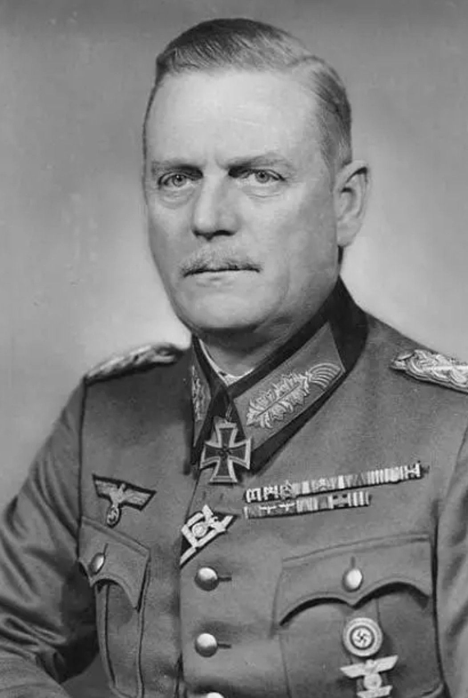

Nom : Wilhelm Bodewin Johann Gustav Keitel
Dates : 22 septembre 1882 – 16 octobre 1946
Nationalité : Allemande
Wilhelm Keitel est l’un des plus hauts responsables militaires du régime nazi. Chef du Haut Commandement de la Wehrmacht (OKW), il est un exécutant loyal d’Hitler et signe de nombreux ordres criminels durant la guerre.
Keitel supervise l’ensemble des opérations militaires allemandes en tant que chef de l’OKW. Il valide et transmet les directives d’Hitler, notamment celles concernant les exécutions, les représailles massives et les politiques de terreur sur les territoires occupés.
Son rôle est central dans la coordination militaire du Reich, mais il est souvent considéré comme un officier docile, incapable de s’opposer aux décisions d’Hitler.
Keitel est considéré comme l’un des principaux responsables militaires du régime nazi. Son obéissance totale à Hitler et son rôle dans la transmission d’ordres criminels ont conduit à sa condamnation à mort pour crimes de guerre et crimes contre l’humanité.